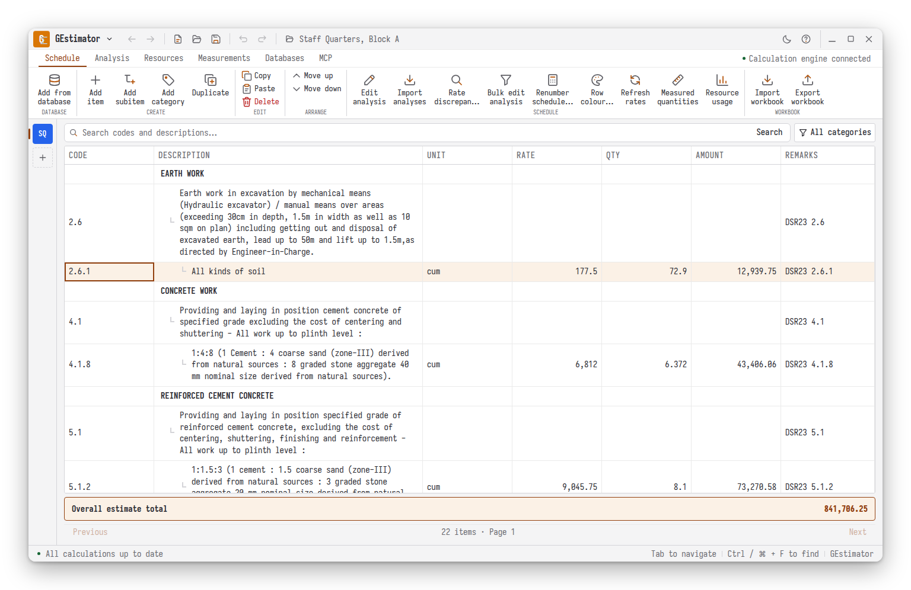
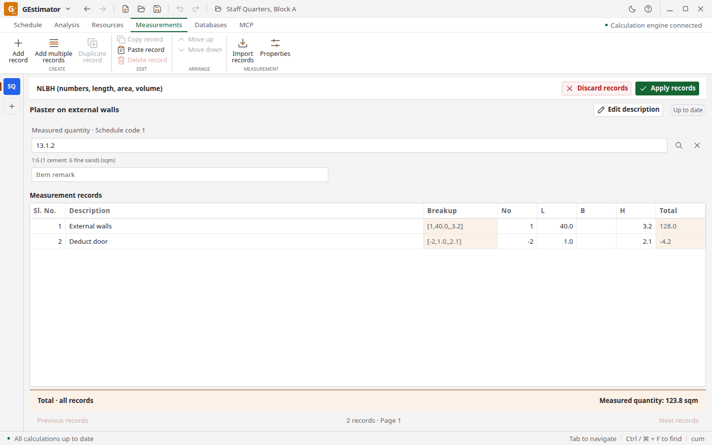
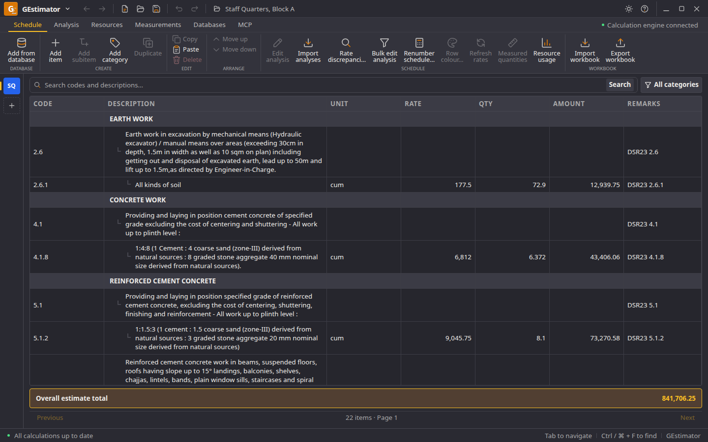

Estimates and rate analysis for civil and electrical works
GEstimator prepares cost and quantity estimates with detailed rate analysis and measurements. It comes bundled with CPWD DSR 2023 (Civil), DSR (E&M) 2025 and DSR 2025 Horticulture. Free and open source for Windows and Linux.

Features
Schedule from databases
Search an attached database and add items with their rate analyses, resources and headings, or enter items directly or import them from Excel.
Detailed rate analysis
Resource groups, subtotals, weighted additions for CP&OH, GST and cess, multipliers and rounding. A resource rate change updates every dependent item.
Bulk edits with preview
Change many analyses at once with rules, for example a new overhead percentage or a replaced resource, and check every change before applying it.
Measurements
Record dimensions against schedule items with NLBH, steel, electrical point and ducting templates. Cells accept expressions; quantities update from the totals.
Excel export
Export the schedule of rates, schedule of resources, details of measurements, resource usage and the analysis of every item to one workbook.
AI assistants
An optional local MCP server lets Claude or any MCP client read and prepare estimates in the open project, with every change undoable.
Screenshots






Download
Windows
Installer (.exe) from the latest release. Uninstall any 2.x version first.
Linux – Flathub
Install from Flathub on any distribution.
Linux – Snap Store
Install from the Snap Store.
Linux – .deb and AppImage
Packages from the latest release.
More databases (DSR 2016–2021, DSR (E&M) 2016–2022 and market rate databases) are in Other databases. Version 2.7 of the earlier application remains available under Releases.